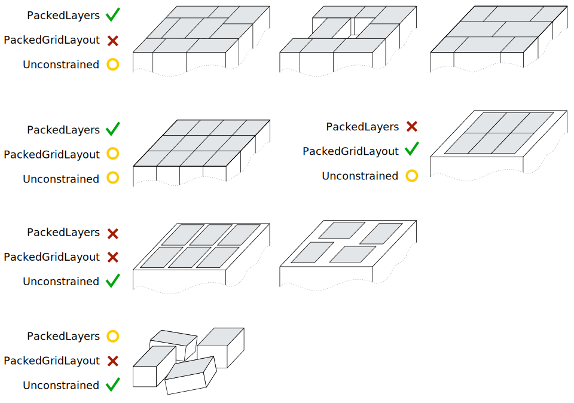

BoxPick¶
Introduction¶
The BoxPick module provides an out-of-the-box perception solution for robotic pick-and-place applications. It detects rectangular surfaces and determines their position, orientation and size for grasping. With the +Match extension, BoxPick can be used to detect textured rectangles with consistent orientations, such as printed product packaging, labels, brochures or books.
In addition, the module offers:
- A dedicated page on the rc_visard NG Web GUI for easy setup, configuration, testing, and application tuning.
- The definition of regions of interest to select relevant volumes in the scene (see RoiDB).
- A load carrier detection functionality for bin-picking applications (see LoadCarrier), to provide grasps for items inside a bin only.
- The definition of compartments inside a load carrier to provide grasps for specific volumes of the bin only.
- Collision checking between the gripper and the load carrier and/or the point cloud.
- Support for static and robot-mounted cameras and optional integration with the Hand-eye calibration module, to provide grasps in the user-configured external reference frame.
- A quality value associated to each suggested grasp and related to the flatness of the grasping surface.
- Selection of a sorting strategy to sort the returned grasps.
- 3D visualization of the detection results with grasp points and gripper animations in the Web GUI.
Note
In this chapter, cluster and surface are used as synonyms and identify a set of points (or pixels) with defined geometrical properties.
The module is an optional on-board module of the rc_visard NG and requires a separate BoxPick license to be purchased. The +Match extension requires an extra license.
Detection of items¶
There are two different types of models for the rectangles to be detected by the BoxPick module.
Per default, BoxPick only supports item_models of
type RECTANGLE. With the +Match extension, also item models
of type TEXTURED_BOX can be detected. The detection of the
different item model types is described below.
Optionally, further information can be given to the BoxPick module:
- The ID of the load carrier which contains the items to be detected.
- A compartment inside the load carrier where to detect items.
- The ID of the region of interest where to search for the load carriers if a load carrier is set. Otherwise, the ID of the region of interest where to search for the items.
- The current robot pose in case the camera is mounted on the robot and
the chosen coordinate frame for the poses is
externalor the chosen region of interest is defined in the external frame.
The returned pose of a detected item is the pose of the center of the detected rectangle in the
desired reference frame (pose_frame), with its z axis pointing towards the camera and the x axis
aligned with the long side of the item. This pose has a 180° rotation ambiguity around the z axis, which can be resolved
by using the +Match extension with a TEXTURED_BOX item model.
Each detected item includes a uuid (Universally Unique Identifier) and the
timestamp of the oldest image that was used to detect it.
Detection of items of type RECTANGLE¶
BoxPick supports multiple item_models of type RECTANGLE.
Each item model is defined by its minimum and maximum size, with the
minimum dimensions strictly smaller than the maximum dimensions.
The dimensions should be given fairly accurately to avoid misdetections,
while still considering a certain tolerance to account for possible production variations
and measurement inaccuracies.
The detection of the rectangles runs in several steps. First, the point cloud is segmented into preferably plane clusters. Then, straight line segments are detected in the 2D images and projected onto the corresponding clusters. The clusters and the detected lines are visualized in the “Intermediate Result” visualization on the Web GUI’s BoxPick page. Finally, for each cluster, the set of rectangles best fitting to the detected line segments is extracted.
Detection of items of type TEXTURED_BOX (BoxPick+Match)¶
With the +Match extension, BoxPick additionally supports item_models of type TEXTURED_BOX.
When this item model type is used, only one item model can be given for each request.
The TEXTURED_BOX item model type should be used to detect multiple rectangles that have the same texture, i.e. the same look or print,
such as printed product packaging, labels, brochures or books. It is required that for all objects the texture is at the same position with respect
to the object geometry. Furthermore, the texture should not be repetitive.
A TEXTURED_BOX item is defined by the item’s exact dimensions x, y and z (only z
is allowed to be 0) with a tolerance dimensions_tolerance_m that indicates,
how much the detected dimensions are allowed to deviate from the given dimensions. By default, a tolerance of 0.01 m is assumed.
Furthermore, a template_id must be given, which will be used to refer to the specified dimensions and the
textures of the detected rectangles. Additionally, the maximum possible deformation of the items max_deformation_m
can be given in meters (default 0.004 m), to account for rigid or more flexible objects.
If a template_id is used for the first time, BoxPick will run the detection of rectangles as for the item
model type RECTANGLE, and use the given dimensions and tolerance to specify the dimensions range. If the z dimension
is given in addition to x and y, rectangles with all possible combinations of the three dimensions will be detected. From the detected
rectangles, so-called views are created, which contain the shape and the image intensity values of the rectangles,
and are stored in a newly created template with the given template_id. The views are created iteratively: Starting
from the detected rectangle with the highest score, a view is created and then used to detect more rectangles with the same
texture. Then, all remaining clusters are used to detect further rectangles by the given dimensions range and again a view is
created from the best rectangle and used for further detections.
Each template can store up to 10 different views, for example corresponding to different types of the same product packaging.
Each view will be assigned a unique ID (view_uuid)
and all rectangle items with a matching texture will be assigned the same view_uuid. That also means that all items
with the same view_uuid will have consistent orientations, because the orientation of each item is aligned with its texture.
The views can be displayed, deleted and the orientation of each view can be set via the
Web GUI by clicking on the template or its edit symbol in the template list.
Each detected item contains a field view_pose_set indicating whether the orientation of the item’s view was explicitly set or
is still unset at its original random state, which has a 180° ambiguity. Additionally, a user-defined name can be set for each view, that
is returned along with the view_uuid for all items and allows an easier identification of a specific view.
The type of a returned item with a view_uuid will be
TEXTURED_RECTANGLE.
If the template with the given template_id already exists, the existing views will be used to detect rectangles based on their
texture. If additional rectangles are found with matching dimensions, but different texture, new views will be generated and added
to the template. When the maximum number of views is reached, views that are matched only rarely will be deleted so that newly generated
views can be added to the template and the template is kept up-to-date. To prevent a template from being updated, automatic view updating
can be disabled and enabled for
each template in the Web GUI by clicking on the template or the edit symbol in the template list.
The dimension tolerance and the maximum deformation can also be changed there for each template. The maximum deformation determines
the tolerance for the texture matching, representing possible shifts within the texture, e.g. caused by deformations of the object surface.
For rigid objects the max_deformation_m should be set to a low value in meters to ensure accurate matching.
The template’s dimensions can only be specified when creating a new template. Once the template is generated, the dimensions cannot be changed
and do not need to be given in the detect request. If the dimensions are still given in the request, they must match the existing dimensions
in the template. However, the dimensions_tolerance_m
and max_deformation_m can be set differently in every detect request and their values will also be updated in the stored template.
Computation of grasps¶
The BoxPick module offers a service for computing grasps for suction grippers. The gripper is defined by its suction surface length and width.
The grasps are computed on the detected rectangular items
(see Detection of items).
Optionally, further information can be given to the module in a grasp computation request:
- The ID of the load carrier which contains the items to be grasped.
- A compartment inside the load carrier where to compute grasps (see Load carrier compartments).
- The ID of the 3D region of interest where to search for the load carriers if a load carrier is set. Otherwise, the ID of the 3D region of interest where to compute grasps.
- Collision detection information: The ID of the gripper to enable collision checking and optionally a pre-grasp offset to define a pre-grasp position. Details on collision checking are given below in CollisionCheck.
A grasp provided by the BoxPick module represents the recommended
pose of the TCP (Tool Center Point) of the suction gripper.
The grasp type is always set to SUCTION.
The computed grasp pose is the center of the biggest ellipse that can be inscribed in
each surface.
The grasp orientation is a right-handed coordinate system and is defined such
that its z axis is normal to the surface pointing inside the object at the grasp position and
its x axis is directed along the maximum elongation of the ellipse. Since the x axis can have two possible directions,
the one that better fits to the preferred TCP orientation (see Setting the preferred orientation of the TCP) is selected. If the run-time parameter allow_any_grasp_z_rotation
is set to true, the x axis will not be forced to be aligned with the maximum elongation of the graspable ellipse, but can have
any rotation around the z axis. In this case, the returned grasp will have the orientation that best fits to the preferred TCP orientation
and is collision free, if collision checking is enabled.
{kind=link}
Fig. 26 Illustration of a suction grasp with coordinate system and ellipse representing the maximum suction surface
Each grasp includes the dimensions of the maximum suction surface available,
modelled as an ellipse of axes max_suction_surface_length and
max_suction_surface_width. The user is enabled to filter grasps by specifying
the minimum suction surface required by the suction device in use.
If the run-time parameter allow_any_grasp_z_rotation
is set to true, max_suction_surface_length and
max_suction_surface_width will be equal and correspond to the shortest axis of the largest
graspable ellipse.
In the BoxPick module, the grasp position corresponds to the center of the detected
rectangle. When BoxPick is called with item models of type RECTANGLE, the dimensions
of the maximum suction surface available matches the estimated
rectangle dimensions. In this case, detected rectangles with missing data or occlusions by other objects for more
than 15% of their surface do not get an associated grasp.
When BoxPick is called with item models of type TEXTURED_BOX, grasps can also be computed
on partly occluded boxes. The maximum suction surface available matches the free surface
that is not occluded by other clusters.
Each grasp also includes a quality value, which gives an
indication of the flatness of the grasping surface.
The quality value varies between 0 and 1, where higher numbers correspond to a
flatter reconstructed surface.
The grasp definition is complemented by a uuid (Universally Unique Identifier)
and the timestamp of the oldest image that was used to compute the grasp.
Grasp sorting is performed based on the selected sorting strategy. The following sorting strategies
are available and can be set in the Web GUI
or using the set_sorting_strategies service call:
gravity: highest grasp points along the gravity direction are returned first,surface_area: grasp points with the largest surface area are returned first,direction: grasp points with the shortest distance along a defined directionvectorin a givenpose_frameare returned first.distance_to_point: grasp points with the shortest or farthest (iffarthest_firstis true) distance from apointin a givenpose_frameare returned first.
If no sorting strategy is set or default sorting is chosen in the Web GUI, sorting is done based on a combination of
gravity and surface_area.
Setting the preferred orientation of the TCP¶
The BoxPick module determines the reachability of grasp points based on the preferred orientation of the
TCP. The preferred orientation can be set via the set_preferred_orientation service or on
the BoxPick page in the Web GUI.
The resulting direction of the TCP’s z axis is used to reject grasps which cannot be reached by the gripper.
Furthermore, the preferred orientation is used to select one grasp of several possible symmetries that is best reachable for the robot.
The preferred orientation can be set in the camera coordinate frame or in the external coordinate frame, in case a hand-eye calibration is available. If the preferred orientation is specified in the external coordinate frame and the sensor is robot mounted, the current robot pose has to be given to each object detection call. If no preferred orientation is set, the orientation of the left camera (see Coordinate frames ) will be used as the preferred orientation of the TCP.used.
Interaction with other modules¶
Internally, the BoxPick module depends on, and interacts with other on-board modules as listed below.
Note
All changes and configuration updates to these modules will affect the performance of the BoxPick module.
Camera and depth data¶
The BoxPick module makes internally use of the following data:
- Rectified images from the Camera module
(
rc_camera)
- Disparity, error, and confidence images from the Stereo matching module
(
rc_stereomatching)
All processed images are guaranteed to be captured after the module trigger time.
IO and Projector Control¶
In case the rc_visard NG is used in conjunction with an external random dot projector and
the IO and Projector Control module (rc_iocontrol),
it is recommended to connect the projector to GPIO Out 1 and set
the stereo-camera module’s acquisition mode to SingleFrameOut1
(see Stereo matching parameters), so that
on each image acquisition trigger an image with and without projector pattern is acquired.
Alternatively, the output mode for the GPIO output in use should be set to ExposureAlternateActive
(see Description of run-time parameters).
In either case,
the Auto Exposure Mode exp_auto_mode should be set to AdaptiveOut1 to optimize the exposure
of both images.
Hand-eye calibration¶
In case the camera has been calibrated to a robot, the BoxPick module
can automatically provide poses in the robot coordinate frame.
For the BoxPick node’s Services, the frame of the
output poses can be controlled with the pose_frame argument.
Two different pose_frame values can be chosen:
- Camera frame (
camera). All poses provided by the modules are in the camera frame, and no prior knowledge about the pose of the camera in the environment is required. This means that the configured regions of interest and load carriers move with the camera. It is the user’s responsibility to update the configured poses if the camera frame moves (e.g. with a robot-mounted camera). - External frame (
external). All poses provided by the modules are in the external frame, configured by the user during the hand-eye calibration process. The module relies on the on-board Hand-eye calibration module to retrieve the sensor mounting (static or robot mounted) and the hand-eye transformation. If the mounting is static, no further information is needed. If the sensor is robot-mounted, therobot_poseis required to transform poses to and from theexternalframe.
Note
If no hand-eye calibration is available, all pose_frame values should be set to camera.
All pose_frame values that are not camera or external are rejected.
If the sensor is robot-mounted, the current robot_pose has to be provided depending on the value of pose_frame
and the definition of the sorting direction or sorting point:
- If
pose_frameis set toexternal, providing the robot pose is obligatory. - If the sorting direction is defined in
external, providing the robot pose is obligatory. - If the distance-to-point sorting strategy is defined in
external, providing the robot pose is obligatory. - In all other cases, providing the robot pose is optional.
LoadCarrier¶
The BoxPick module uses the load carrier detection functionality provided by the
LoadCarrier module (rc_load_carrier),
with the run-time parameters specified for this module. However, only one load carrier will be
returned and used in case multiple matching load carriers could be found in the scene. In case multiple
load carriers of the same type are visible, a 3D region of interest should be set to ensure that always the
same load carrier is used for the BoxPick module.
The load carrier is used to filter false detections when BoxPick is triggered with an item model of type
TEXTURED_BOX and all three dimensions x, y, z are given. In this case, 3D boxes are created internally
by adding the missing dimensions to the detected rectangles and only detections corresponding
to boxes which are fully inside the detected load carrier are returned.
CollisionCheck¶
Collision checking can be easily enabled for
grasp computation of the BoxPick module by passing the ID of the used gripper and
optionally a pre-grasp offset to the
compute_grasps service call. The gripper has to be
defined in the GripperDB module
(see Setting a gripper)
and details about collision checking are given in Collision checking within other modules.
If collision checking is enabled, only grasps which are collision free will be returned. However, the visualization images on the BoxPick page of the Web GUI also show colliding grasp points as black ellipses.
The CollisionCheck module’s run-time parameters affect the collision detection as described in CollisionCheck Parameters.
Parameters¶
The BoxPick module is called rc_boxpick
in the REST-API and is represented in the Web GUI
under
.
The user can explore and configure the rc_boxpick
module’s run-time parameters, e.g. for development and testing, using the Web GUI or the
REST-API interface.
Parameter overview¶
This module offers the following run-time parameters:
| Name | Type | Min | Max | Default | Description |
|---|---|---|---|---|---|
allow_any_grasp_z_-rotation |
bool | false | true | false | Whether the grasps are allowed to have arbitrary rotation instead being aligned with the major axis of the graspable ellipse |
allow_untextured_-detections |
bool | false | true | false | Whether to return also untextured detections in case a textured box was given |
check_collisions_with_-point_cloud |
bool | false | true | false | Whether to check for collisions between gripper and the point cloud |
cluster_max_curvature |
float64 | 0.005 | 0.5 | 0.11 | Maximum curvature allowed within one cluster. The smaller this value, the more clusters will be split apart. |
clustering_discontinuity_-factor |
float64 | 0.1 | 5.0 | 1.0 | Factor used to discriminate depth discontinuities within a patch. The smaller this value, the more clusters will be split apart. |
clustering_max_surface_-rmse |
float64 | 0.0005 | 0.01 | 0.004 | Maximum root-mean-square error (RMSE) in meters of points belonging to a surface |
grasp_filter_orientation_-threshold |
float64 | 0.0 | 180.0 | 45.0 | Maximum allowed orientation change between grasp and preferred orientation in degrees |
line_sensitivity |
float64 | 0.1 | 1.0 | 0.1 | Sensitivity of the line detector |
manual_line_sensitivity |
bool | false | true | false | Indicates whether the user-defined line sensitivity should be used or the automatic one |
max_grasps |
int32 | 1 | 100 | 5 | Maximum number of provided grasps |
min_cluster_coverage |
float64 | 0.0 | 0.99 | 0.0 | Gives the minimal ratio of points per cluster that must be covered with detected items. |
mode |
string | - | - | Unconstrained | Mode of the rectangle detection: [Unconstrained, PackedGridLayout, PackedLayers] |
prefer_splits |
bool | false | true | false | Indicates whether rectangles are split into smaller ones when possible |
Description of run-time parameters¶
Each run-time parameter is represented by a row on the Web GUI’s BoxPick page. The name in the Web GUI is given in brackets behind the parameter name and the parameters are listed in the order they appear in the Web GUI:
max_grasps (Maximum Grasps)¶
sets the maximum number of provided grasps.
Via the REST-API, this parameter can be set as follows.
PUT http://<host>/api/v2/pipelines/0/nodes/rc_boxpick/parameters/parameters?max_grasps=<value>PUT http://<host>/api/v1/nodes/rc_boxpick/parameters?max_grasps=<value>
cluster_max_curvature (Cluster Maximum Curvature)¶
is the maximum curvature allowed within one cluster. The smaller this value, the more clusters will be split apart.
Via the REST-API, this parameter can be set as follows.
PUT http://<host>/api/v2/pipelines/0/nodes/rc_boxpick/parameters/parameters?cluster_max_curvature=<value>PUT http://<host>/api/v1/nodes/rc_boxpick/parameters?cluster_max_curvature=<value>
clustering_discontinuity_factor (Discontinuity Factor)¶
is the factor used to discriminate depth discontinuities within a patch. The smaller this value, the more clusters will be split apart.
Via the REST-API, this parameter can be set as follows.
PUT http://<host>/api/v2/pipelines/0/nodes/rc_boxpick/parameters/parameters?clustering_discontinuity_factor=<value>PUT http://<host>/api/v1/nodes/rc_boxpick/parameters?clustering_discontinuity_factor=<value>
clustering_max_surface_rmse (Maximum Surface RMSE)¶
is the maximum root-mean-square error (RMSE) in meters of points belonging to a surface.
Via the REST-API, this parameter can be set as follows.
PUT http://<host>/api/v2/pipelines/0/nodes/rc_boxpick/parameters/parameters?clustering_max_surface_rmse=<value>PUT http://<host>/api/v1/nodes/rc_boxpick/parameters?clustering_max_surface_rmse=<value>
mode (Mode)¶
determines the mode of the rectangle detection. Possible values are
Unconstrained,PackedGridLayoutandPackedLayers. InPackedGridLayoutmode, rectangles of a cluster are detected in a dense grid pattern. InPackedLayersmode, boxes are assumed to form layers and box detection will start searching for items at the cluster corners. Use this mode in de-palletizing applications. InUnconstrainedmode (default), rectangles are detected without posing any constraints on their relative locations or their positions in the segmented cluster. Fig. 27 illustrates the modes for different scenarios.Fig. 27 Illustration of appropriate BoxPick modes for different scenes. Modes marked with yellow are applicable but not recommended for the corresponding scene. The gray areas indicate the rectangles to be detected.
Via the REST-API, this parameter can be set as follows.
PUT http://<host>/api/v2/pipelines/0/nodes/rc_boxpick/parameters/parameters?mode=<value>PUT http://<host>/api/v1/nodes/rc_boxpick/parameters?mode=<value>
{kind=link}
manual_line_sensitivity (Manual Line Sensitivity)¶
determines whether the user-defined line sensitivity should be used to extract the lines for rectangle detection. If this parameter is set to true, the user-defined
line_sensitivityvalue will be used. If this parameter is set to false, automatic line sensitivity will be used. This parameter should be set to true when automatic line sensitivity does not give enough lines at the box boundaries so that boxes cannot be detected. The detected line segments are visualized in the “Intermediate Result” visualization on the Web GUI’s BoxPick page.Via the REST-API, this parameter can be set as follows.
PUT http://<host>/api/v2/pipelines/0/nodes/rc_boxpick/parameters/parameters?manual_line_sensitivity=<value>PUT http://<host>/api/v1/nodes/rc_boxpick/parameters?manual_line_sensitivity=<value>
line_sensitivity (Line Sensitivity)¶
determines the line sensitivity for extracting the lines for rectangle detection, if the parameter
manual_line_sensitivityis set to true. Otherwise, the value of this parameter has no effect on the rectangle detection. Higher values give more line segments, but also increase the runtime of the box detection. This parameter should be increased when boxes cannot be detected because their boundary edges are not detected. The detected line segments are visualized in the “Intermediate Result” visualization on the Web GUI’s BoxPick page.Via the REST-API, this parameter can be set as follows.
PUT http://<host>/api/v2/pipelines/0/nodes/rc_boxpick/parameters/parameters?line_sensitivity=<value>PUT http://<host>/api/v1/nodes/rc_boxpick/parameters?line_sensitivity=<value>
prefer_splits (Prefer Splits)¶
determines whether rectangles should be split into smaller ones if the smaller ones also match the given item models. This parameter should be set to true for packed box layouts in which the given item models would also match a rectangle of the size of two adjoining boxes. If this parameter is set to false, the larger rectangles will be preferred in these cases.
Via the REST-API, this parameter can be set as follows.
PUT http://<host>/api/v2/pipelines/0/nodes/rc_boxpick/parameters/parameters?prefer_splits=<value>PUT http://<host>/api/v1/nodes/rc_boxpick/parameters?prefer_splits=<value>
min_cluster_coverage (Minimum Cluster Coverage)¶
determines which ratio of each segmented cluster must be covered with rectangle detections to consider the detections to be valid. If the minimum cluster coverage is not reached for a cluster, no rectangle detections will be returned for this cluster and a warning will be given. This parameter should be used to verify that all items on a layer in a de-palletizing scenario are detected.
Via the REST-API, this parameter can be set as follows.
PUT http://<host>/api/v2/pipelines/0/nodes/rc_boxpick/parameters/parameters?min_cluster_coverage=<value>PUT http://<host>/api/v1/nodes/rc_boxpick/parameters?min_cluster_coverage=<value>
allow_untextured_detections (Only for BoxPick+Match, Allow Untextured Detections)¶
enables returning all rectangles matching the given template dimensions, even when they cannot be matched to an existing view or when they do not have enough texture to create a new view from them. This parameter is only used when item models of type
TEXTURED_BOXare detected. Disabling this parameter leads to faster detections when used with a template for which the automatic view updating is disabled.Via the REST-API, this parameter can be set as follows.
PUT http://<host>/api/v2/pipelines/0/nodes/rc_boxpick/parameters/parameters?allow_untextured_detections=<value>PUT http://<host>/api/v1/nodes/rc_boxpick/parameters?allow_untextured_detections=<value>
grasp_filter_orientation_threshold (Grasp Orientation Threshold)¶
is the maximum deviation of the TCP’s z axis at the grasp point from the z axis of the TCP’s preferred orientation in degrees. Only grasp points which are within this threshold are returned. When set to zero, any deviations are valid.
Via the REST-API, this parameter can be set as follows.
PUT http://<host>/api/v2/pipelines/<0,1,2,3>/nodes/rc_boxpick/parameters?grasp_filter_orientation_threshold=<value>PUT http://<host>/api/v1/nodes/rc_boxpick/parameters?grasp_filter_orientation_threshold=<value>
allow_any_grasp_z_rotation (Allow Any Grasp Z Rotation)¶
If set to true, the returned grasps are no longer forced to have their x axes aligned with the maximum elongation of the graspable ellipse, but can have any rotation around the z axis. The returned
max_suction_surface_lengthandmax_suction_surface_widthwill be equal and correspond to the shortest diameter of the largest graspable ellipse. This parameter enables the robot to get more options for grasping objects, especially in scenes where collisions can occur. However, since the grasp is no longer aligned with the graspable ellipse, the correct orientation for placing the object must be determined from the correspondingitem’s pose.Via the REST-API, this parameter can be set as follows.
PUT http://<host>/api/v2/pipelines/<0,1,2,3>/nodes/rc_boxpick/parameters?allow_any_grasp_z_rotation=<value>PUT http://<host>/api/v1/nodes/rc_boxpick/parameters?allow_any_grasp_z_rotation=<value>
check_collisions_with_point_cloud (Check Collisions with Point Cloud)¶
This parameter is only used when collision checking is enabled by passing a gripper to the
compute_graspsservice call. Ifcheck_collisions_with_point_cloudis set to true, all grasp points will be checked for collisions between the gripper and a watertight version of the point cloud, and only grasp points at which the gripper would not collide with this point cloud will be returned.Via the REST-API, this parameter can be set as follows.
PUT http://<host>/api/v2/pipelines/<0,1,2,3>/nodes/rc_boxpick/parameters?check_collisions_with_point_cloud=<value>PUT http://<host>/api/v1/nodes/rc_boxpick/parameters?check_collisions_with_point_cloud=<value>
Status values¶
The rc_boxpick module reports the following status values:
| Name | Description |
|---|---|
data_acquisition_time |
Time in seconds required by the last active service to acquire images |
grasp_computation_time |
Processing time of the last grasp computation in seconds |
last_timestamp_processed |
The timestamp of the last processed dataset |
load_carrier_detection_time |
Processing time of the last load carrier detection in seconds |
processing_time |
Processing time of the last detection (including load carrier detection) in seconds |
state |
The current state of the rc_boxpick node |
The reported state can take one of the following values.
| State name | Description |
|---|---|
| IDLE | The module is idle. |
| RUNNING | The module is running and ready for load carrier detection and grasp computation. |
| FATAL | A fatal error has occurred. |
Services¶
The user can explore and call the rc_boxpick module’s services,
e.g. for development and testing, using the
REST-API interface or
the rc_visard NG
Web GUI.
The BoxPick module offers the following services.
detect_items¶
Triggers the detection of rectangles as described in Detection of items.
Details
This service can be called as follows.
PUT http://<host>/api/v2/pipelines/0/nodes/rc_boxpick/services/detect_itemsPUT http://<host>/api/v1/nodes/rc_boxpick/services/detect_itemsRequired arguments:
pose_frame: see Hand-eye calibration.
item_models: list of item models to be detected. The type of the item model must beRECTANGLEorTEXTURED_BOX. For typeRECTANGLE,rectanglemust be filled, while forTEXTURED_BOX,textured_boxmust be filled. See Detection of items for a detailed description of the item model types.Potentially required arguments:
robot_pose: see Hand-eye calibration.Optional arguments:
load_carrier_id: ID of the load carrier which contains the items to be detected.
load_carrier_compartment: compartment inside the load carrier where to detect items (see Load carrier compartments).
region_of_interest_id: ifload_carrier_idis set, ID of the 3D region of interest where to search for the load carriers. Otherwise, ID of the 3D region of interest where to search for the items.The definition for the request arguments with corresponding datatypes is:
{ "args": { "item_models": [ { "rectangle": { "max_dimensions": { "x": "float64", "y": "float64" }, "min_dimensions": { "x": "float64", "y": "float64" } }, "textured_box": { "dimensions": { "x": "float64", "y": "float64", "z": "float64" }, "dimensions_tolerance_m": "float64", "max_deformation_m": "float64", "template_id": "string" }, "type": "string" } ], "load_carrier_compartment": { "box": { "x": "float64", "y": "float64", "z": "float64" }, "pose": { "orientation": { "w": "float64", "x": "float64", "y": "float64", "z": "float64" }, "position": { "x": "float64", "y": "float64", "z": "float64" } } }, "load_carrier_id": "string", "pose_frame": "string", "region_of_interest_id": "string", "robot_pose": { "orientation": { "w": "float64", "x": "float64", "y": "float64", "z": "float64" }, "position": { "x": "float64", "y": "float64", "z": "float64" } } } }
load_carriers: list of detected load carriers.
items: list of detected rectangles.
timestamp: timestamp of the image set the detection ran on.
return_code: holds possible warnings or error codes and messages.The definition for the response with corresponding datatypes is:
{ "name": "detect_items", "response": { "items": [ { "pose": { "orientation": { "w": "float64", "x": "float64", "y": "float64", "z": "float64" }, "position": { "x": "float64", "y": "float64", "z": "float64" } }, "pose_frame": "string", "rectangle": { "x": "float64", "y": "float64" }, "template_id": "string", "timestamp": { "nsec": "int32", "sec": "int32" }, "type": "string", "uuid": "string", "view_name": "string", "view_pose_set": "bool", "view_uuid": "string" } ], "load_carriers": [ { "height_open_side": "float64", "id": "string", "inner_dimensions": { "x": "float64", "y": "float64", "z": "float64" }, "outer_dimensions": { "x": "float64", "y": "float64", "z": "float64" }, "overfilled": "bool", "pose": { "orientation": { "w": "float64", "x": "float64", "y": "float64", "z": "float64" }, "position": { "x": "float64", "y": "float64", "z": "float64" } }, "pose_frame": "string", "rim_ledge": { "x": "float64", "y": "float64" }, "rim_step_height": "float64", "rim_thickness": { "x": "float64", "y": "float64" }, "type": "string" } ], "return_code": { "message": "string", "value": "int16" }, "timestamp": { "nsec": "int32", "sec": "int32" } } }
compute_grasps¶
Triggers the detection of rectangles and the computation of grasping poses for the detected rectangles as described in Computation of grasps.
Details
This service can be called as follows.
PUT http://<host>/api/v2/pipelines/0/nodes/rc_boxpick/services/compute_graspsPUT http://<host>/api/v1/nodes/rc_boxpick/services/compute_graspsRequired arguments:
pose_frame: see Hand-eye calibration.
item_models: list of item models to be detected. The type of the item model must beRECTANGLEorTEXTURED_BOX. For typeRECTANGLE,rectanglemust be filled, while forTEXTURED_BOX,textured_boxmust be filled. See Detection of items for a detailed description of the item model types.
suction_surface_length: length of the suction device grasping surface.
suction_surface_width: width of the suction device grasping surface.Potentially required arguments:
robot_pose: see Hand-eye calibration.Optional arguments:
load_carrier_id: ID of the load carrier which contains the items to be grasped.
load_carrier_compartment: compartment inside the load carrier where to compute grasps (see Load carrier compartments).
region_of_interest_id: ifload_carrier_idis set, ID of the 3D region of interest where to search for the load carriers. Otherwise, ID of the 3D region of interest where to compute grasps.
collision_detection: see Collision checking within other modules.The definition for the request arguments with corresponding datatypes is:
{ "args": { "collision_detection": { "gripper_id": "string", "pre_grasp_offset": { "x": "float64", "y": "float64", "z": "float64" } }, "item_models": [ { "rectangle": { "max_dimensions": { "x": "float64", "y": "float64" }, "min_dimensions": { "x": "float64", "y": "float64" } }, "textured_box": { "dimensions": { "x": "float64", "y": "float64", "z": "float64" }, "dimensions_tolerance_m": "float64", "max_deformation_m": "float64", "template_id": "string" }, "type": "string" } ], "load_carrier_compartment": { "box": { "x": "float64", "y": "float64", "z": "float64" }, "pose": { "orientation": { "w": "float64", "x": "float64", "y": "float64", "z": "float64" }, "position": { "x": "float64", "y": "float64", "z": "float64" } } }, "load_carrier_id": "string", "pose_frame": "string", "region_of_interest_id": "string", "robot_pose": { "orientation": { "w": "float64", "x": "float64", "y": "float64", "z": "float64" }, "position": { "x": "float64", "y": "float64", "z": "float64" } }, "suction_surface_length": "float64", "suction_surface_width": "float64" } }
load_carriers: list of detected load carriers.
grasps: sorted list of suction grasps.
items: list of detected rectangles corresponding to the returned grasps.
timestamp: timestamp of the image set the detection ran on.
return_code: holds possible warnings or error codes and messages.The definition for the response with corresponding datatypes is:
{ "name": "compute_grasps", "response": { "grasps": [ { "item_uuid": "string", "max_suction_surface_length": "float64", "max_suction_surface_width": "float64", "pose": { "orientation": { "w": "float64", "x": "float64", "y": "float64", "z": "float64" }, "position": { "x": "float64", "y": "float64", "z": "float64" } }, "pose_frame": "string", "quality": "float64", "timestamp": { "nsec": "int32", "sec": "int32" }, "type": "string", "uuid": "string" } ], "items": [ { "grasp_uuids": [ "string" ], "pose": { "orientation": { "w": "float64", "x": "float64", "y": "float64", "z": "float64" }, "position": { "x": "float64", "y": "float64", "z": "float64" } }, "pose_frame": "string", "rectangle": { "x": "float64", "y": "float64" }, "template_id": "string", "timestamp": { "nsec": "int32", "sec": "int32" }, "type": "string", "uuid": "string", "view_name": "string", "view_pose_set": "bool", "view_uuid": "string" } ], "load_carriers": [ { "height_open_side": "float64", "id": "string", "inner_dimensions": { "x": "float64", "y": "float64", "z": "float64" }, "outer_dimensions": { "x": "float64", "y": "float64", "z": "float64" }, "overfilled": "bool", "pose": { "orientation": { "w": "float64", "x": "float64", "y": "float64", "z": "float64" }, "position": { "x": "float64", "y": "float64", "z": "float64" } }, "pose_frame": "string", "rim_ledge": { "x": "float64", "y": "float64" }, "rim_step_height": "float64", "rim_thickness": { "x": "float64", "y": "float64" }, "type": "string" } ], "return_code": { "message": "string", "value": "int16" }, "timestamp": { "nsec": "int32", "sec": "int32" } } }
set_preferred_orientation¶
Persistently stores the preferred orientation of the TCP to compute the reachability of the grasps, which is used for filtering and the grasps returned by the
compute_graspsservice (see Setting the preferred orientation of the TCP).Details
This service can be called as follows.
PUT http://<host>/api/v2/pipelines/0/nodes/rc_boxpick/services/set_preferred_orientationPUT http://<host>/api/v1/nodes/rc_boxpick/services/set_preferred_orientationThe definition for the request arguments with corresponding datatypes is:
{ "args": { "orientation": { "w": "float64", "x": "float64", "y": "float64", "z": "float64" }, "pose_frame": "string" } }The definition for the response with corresponding datatypes is:
{ "name": "set_preferred_orientation", "response": { "return_code": { "message": "string", "value": "int16" } } }
get_preferred_orientation¶
Returns the preferred orientation of the TCP to compute the reachability of the grasps, which is used for filtering the grasps returned by the
compute_graspsservice (see Setting the preferred orientation of the TCP).Details
This service can be called as follows.
PUT http://<host>/api/v2/pipelines/0/nodes/rc_boxpick/services/get_preferred_orientationPUT http://<host>/api/v1/nodes/rc_boxpick/services/get_preferred_orientationThis service has no arguments.The definition for the response with corresponding datatypes is:
{ "name": "get_preferred_orientation", "response": { "orientation": { "w": "float64", "x": "float64", "y": "float64", "z": "float64" }, "pose_frame": "string", "return_code": { "message": "string", "value": "int16" } } }
set_sorting_strategies¶
Persistently stores the sorting strategy for sorting the grasps returned by the
compute_graspsservice (see Computation of grasps).Details
This service can be called as follows.
PUT http://<host>/api/v2/pipelines/0/nodes/rc_boxpick/services/set_sorting_strategiesPUT http://<host>/api/v1/nodes/rc_boxpick/services/set_sorting_strategiesOnly one strategy may have a
weightgreater than 0. If allweightvalues are set to 0, the module will use the default sorting strategy.If the weight for
directionis set, thevectormust contain the direction vector andpose_framemust be eithercameraorexternal.If the weight for
distance_to_pointis set,pointmust contain the sorting point andpose_framemust be eithercameraorexternal.The definition for the request arguments with corresponding datatypes is:
{ "args": { "direction": { "pose_frame": "string", "vector": { "x": "float64", "y": "float64", "z": "float64" }, "weight": "float64" }, "distance_to_point": { "farthest_first": "bool", "point": { "x": "float64", "y": "float64", "z": "float64" }, "pose_frame": "string", "weight": "float64" }, "gravity": { "weight": "float64" }, "surface_area": { "weight": "float64" } } }The definition for the response with corresponding datatypes is:
{ "name": "set_sorting_strategies", "response": { "return_code": { "message": "string", "value": "int16" } } }
get_sorting_strategies¶
Returns the sorting strategy for sorting the grasps returned by the
compute-graspsservice (see Computation of grasps).Details
This service can be called as follows.
PUT http://<host>/api/v2/pipelines/0/nodes/rc_boxpick/services/get_sorting_strategiesPUT http://<host>/api/v1/nodes/rc_boxpick/services/get_sorting_strategiesThis service has no arguments.All
weightvalues are 0 when the module uses the default sorting strategy.The definition for the response with corresponding datatypes is:
{ "name": "get_sorting_strategies", "response": { "direction": { "pose_frame": "string", "vector": { "x": "float64", "y": "float64", "z": "float64" }, "weight": "float64" }, "distance_to_point": { "farthest_first": "bool", "point": { "x": "float64", "y": "float64", "z": "float64" }, "pose_frame": "string", "weight": "float64" }, "gravity": { "weight": "float64" }, "return_code": { "message": "string", "value": "int16" }, "surface_area": { "weight": "float64" } } }
start¶
Starts the module. If the command is accepted, the module moves to state
RUNNING.Details
This service can be called as follows.
PUT http://<host>/api/v2/pipelines/0/nodes/rc_boxpick/services/startPUT http://<host>/api/v1/nodes/rc_boxpick/services/startThis service has no arguments.The
current_statevalue in the service response may differ fromRUNNINGif the state transition is still in process when the service returns.The definition for the response with corresponding datatypes is:
{ "name": "start", "response": { "accepted": "bool", "current_state": "string" } }
stop¶
Stops the module. If the command is accepted, the module moves to state
IDLE.Details
This service can be called as follows.
PUT http://<host>/api/v2/pipelines/0/nodes/rc_boxpick/services/stopPUT http://<host>/api/v1/nodes/rc_boxpick/services/stopThis service has no arguments.The
current_statevalue in the service response may differ fromIDLEif the state transition is still in process when the service returns.The definition for the response with corresponding datatypes is:
{ "name": "stop", "response": { "accepted": "bool", "current_state": "string" } }
reset_defaults¶
Resets all parameters of the module to its default values, as listed in above table. Also resets sorting strategies.
Details
This service can be called as follows.
PUT http://<host>/api/v2/pipelines/0/nodes/rc_boxpick/services/reset_defaultsPUT http://<host>/api/v1/nodes/rc_boxpick/services/reset_defaultsThis service has no arguments.The definition for the response with corresponding datatypes is:
{ "name": "reset_defaults", "response": { "return_code": { "message": "string", "value": "int16" } } }
Return codes¶
Each service response contains a return_code,
which consists of a value plus an optional message.
A successful service returns with a return_code value of 0.
Negative return_code values indicate that the service failed.
Positive return_code values indicate that the service succeeded with additional information.
The smaller value is selected in case a service has multiple return_code values,
but all messages are appended in the return_code message.
The following table contains a list of common codes:
| Code | Description |
|---|---|
| 0 | Success |
| -1 | An invalid argument was provided |
| -3 | An internal timeout occurred, e.g. during box detection if the given dimension range is too large |
| -4 | Data acquisition took longer than allowed |
| -8 | The template has been deleted during detection. |
| -10 | New element could not be added as the maximum storage capacity of load carriers, regions of interest or template has been exceeded |
| -11 | Sensor not connected, not supported or not ready |
| -200 | Fatal internal error |
| -301 | More than one item model provided to the compute_grasps service |
| 10 | The maximum storage capacity of load carriers, regions of interest or templates has been reached |
| 11 | An existent persistent model was overwritten by the call to set_load_carrier or set_region_of_interest |
| 100 | The requested load carriers were not detected in the scene |
| 101 | No valid surfaces or grasps were found in the scene |
| 102 | The detected load carrier is empty |
| 103 | All computed grasps are in collision |
| 112 | Rejected detections of one or more clusters, because min_cluster_coverage was not reached. |
| 300 | A valid robot_pose was provided as argument but it is not required |
| 999 | Additional hints for application development |
BoxPick Template API¶
BoxPick templates are only available with the +Match extension of BoxPick. For template upload, download, listing and removal, special REST-API endpoints are provided. Templates can also be uploaded, downloaded and removed via the Web GUI. The templates include the dimensions, the views and their poses, if set. Up to 100 templates can be stored persistently on the rc_visard NG.
-
GET/templates/rc_boxpick¶ Get list of all rc_boxpick templates.
Template request
GET /api/v2/templates/rc_boxpick HTTP/1.1
Template response
HTTP/1.1 200 OK Content-Type: application/json [ { "id": "string" } ]
Response Headers: - Content-Type – application/json application/ubjson
Status Codes: - 200 OK – successful operation (returns array of Template)
- 404 Not Found – node not found
Referenced Data Models:
-
GET/templates/rc_boxpick/{id}¶ Get a rc_boxpick template. If the requested content-type is application/octet-stream, the template is returned as file.
Template request
GET /api/v2/templates/rc_boxpick/<id> HTTP/1.1
Template response
HTTP/1.1 200 OK Content-Type: application/json { "id": "string" }
Parameters: - id (string) – id of the template (required)
Response Headers: - Content-Type – application/json application/ubjson application/octet-stream
Status Codes: - 200 OK – successful operation (returns Template)
- 404 Not Found – node or template not found
Referenced Data Models:
-
PUT/templates/rc_boxpick/{id}¶ Create or update a rc_boxpick template.
Template request
PUT /api/v2/templates/rc_boxpick/<id> HTTP/1.1 Accept: multipart/form-data application/json
Template response
HTTP/1.1 200 OK Content-Type: application/json { "id": "string" }
Parameters: - id (string) – id of the template (required)
Form Parameters: - file – template file (required)
Request Headers: - Accept – multipart/form-data application/json
Response Headers: - Content-Type – application/json application/ubjson
Status Codes: - 200 OK – successful operation (returns Template)
- 400 Bad Request – Template is not valid or max number of templates reached
- 403 Forbidden – forbidden, e.g. because there is no valid license for this module.
- 404 Not Found – node or template not found
- 413 Request Entity Too Large – Template too large
Referenced Data Models:
-
DELETE/templates/rc_boxpick/{id}¶ Remove a rc_boxpick template.
Template request
DELETE /api/v2/templates/rc_boxpick/<id> HTTP/1.1 Accept: application/json application/ubjson
Parameters: - id (string) – id of the template (required)
Request Headers: - Accept – application/json application/ubjson
Response Headers: - Content-Type – application/json application/ubjson
Status Codes: - 200 OK – successful operation
- 403 Forbidden – forbidden, e.g. because there is no valid license for this module.
- 404 Not Found – node or template not found